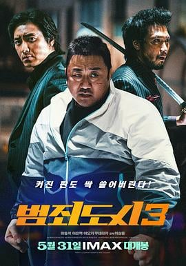

6.6
犯罪都市3
The Roundup: No Way Out
2023
韩国
评分 6.6
导演:
李相龙
演员:
马东锡 / 李浚赫 / 青木崇高 / 李凡秀 / 金敏载 / 全锡浩
类型:
动作,犯罪
剧情简介
七年后，昔日在越南铁拳扫毒的怪物侦探马锡道（马东锡 饰）重返首尔，担任搜查队队员并组建全新警队。他的队伍接手一起离奇跳楼事件：一名年轻女子在夜店服用新型毒品「Hiper」后坠楼，从此揭开一个错综复杂的国际毒品网络。在深入调查中，马队发现幕后不仅有韩国内部贩毒黑帮在运作，甚至一家日本贩毒组织头目里奇（青木崇高 饰）横空出世，挑起中日韩三国的毒品交易格局。与此同时，本地死灰复燃的旧日罪犯朱成哲（李浚赫 饰）也借局势重回舞台，使得案件愈发危险。影片高强度地在夜色和霓虹中展开：长镜头捕捉马锡道在夜店拳脚风暴中逆袭、在仓库黑暗走廊中对峙、在海边废弃码头内喊话，在冷冽的灯光与海风中将敌手一一击溃。与此同时，他与新队员之间的信任也在枪声和爆破中逐渐建立：当同伴初次被包围，他冷静命令“别动，听我倒数”，那一刻团队真正形成。片中最大亮点在于：从系列前作积累而来的“马东锡”式硬核动作延伸为国际维度的狙击与潜伏，剧情虽延续套路却在角色设定与地理版图上拓展。镜头里既有燃爆的拳脚，又有夜幕下潜入情报中心的静谧与惊悚，让观众在连贯的节奏中感受到“警察不会休息也不能失败”的压迫。如果你偏好那种在动作片中融入团队协作、地域扩张、硬派打斗与少许黑色幽默的节奏，这部《犯罪都市3》将带你穿进一条尖锐而膨胀的毒品链，体验罪与警、韩与日、拳与计谋的碰撞。